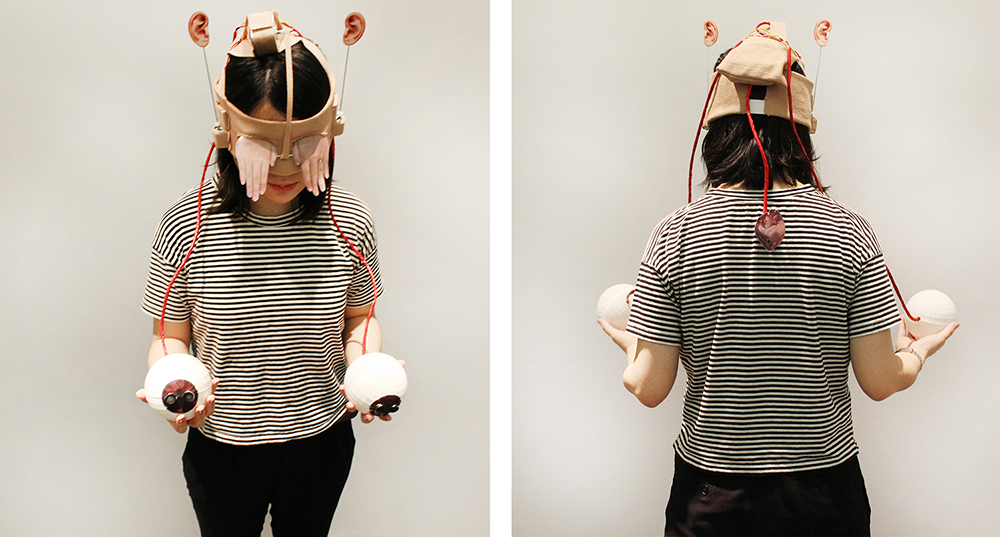
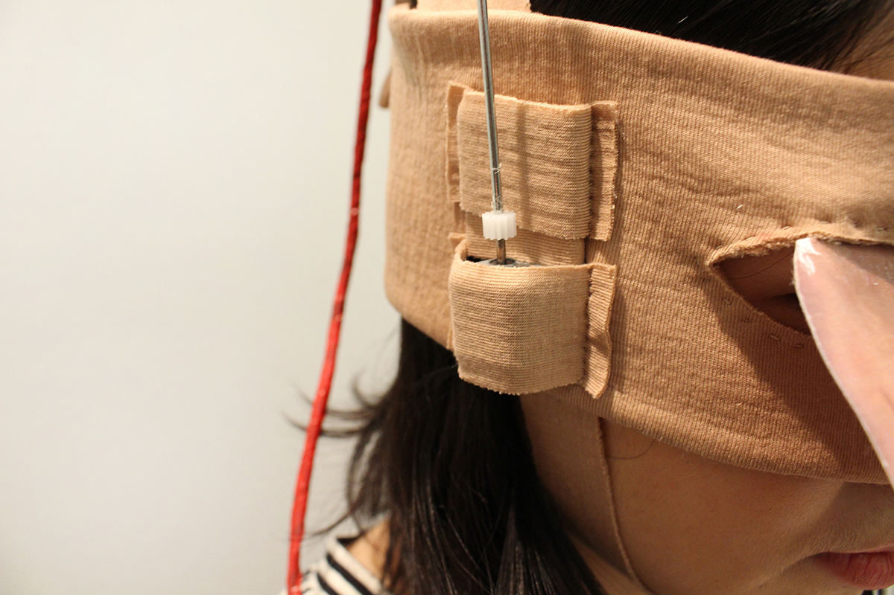
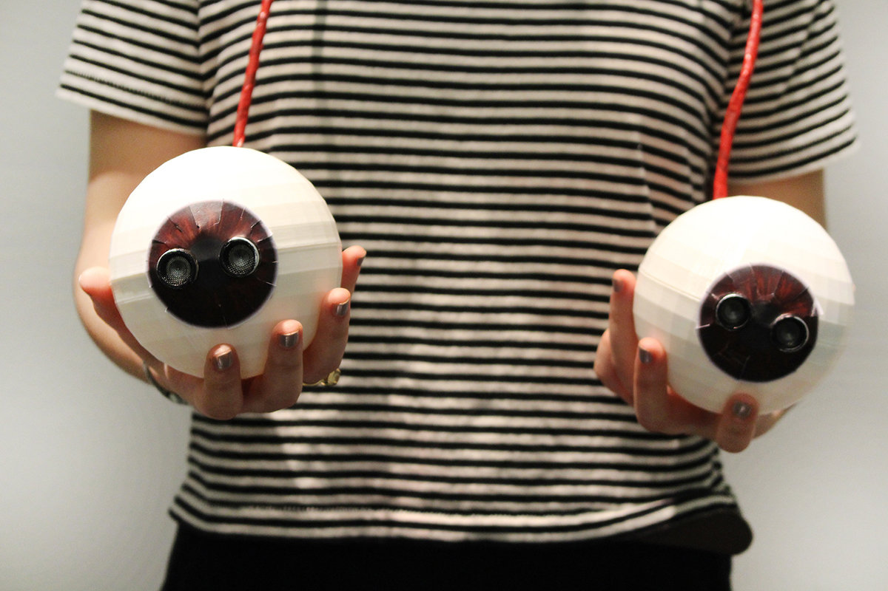
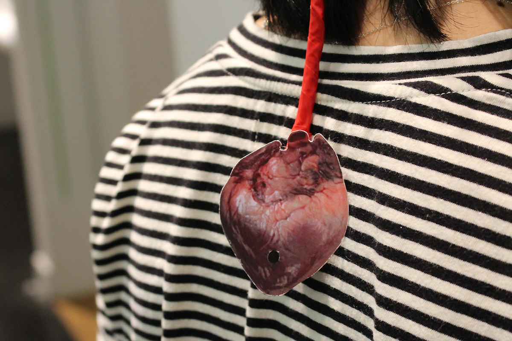
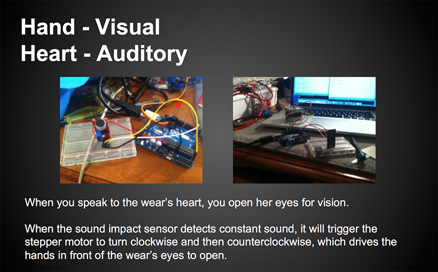
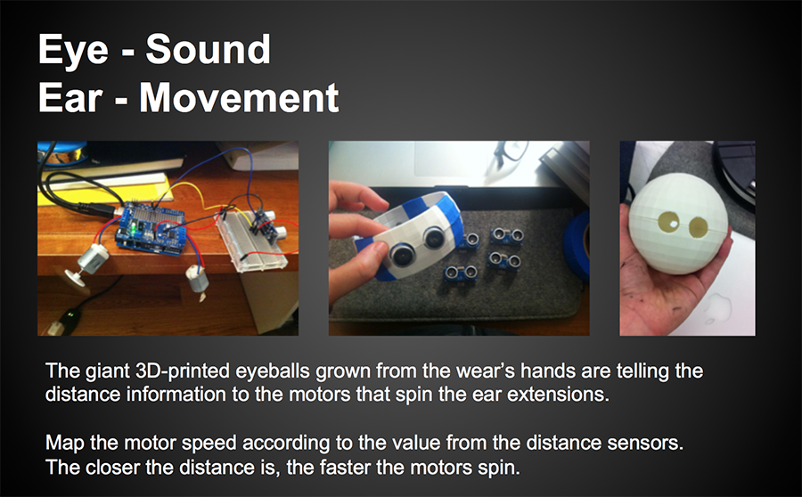

Body Remapping
2014
What does it feel like to have different parts of our body and their functions replaced? This project remaps the locations, sizes, and functions of human body parts. It provides an engaging and immersive experience of a whimsical possibility of human mutation.
Componets include: 3D-printed “eyeballs”, Arduino Uno, Adafruit motor shield, DC motors, stepper motor, ultrasonic distance sensors, sound impact sensor, Gears, and skin-colored Neoprene.
Body Remapping is included in Madeline Schwartzman’s new book See Yourself X.
     